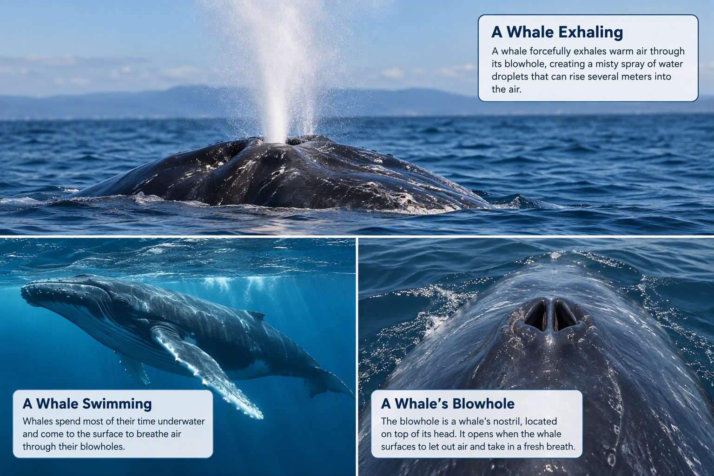

This infographic shows how whales use their blowholes to breathe. The visible spray is created when warm air from the whale's lungs is forcefully exhaled and mixes with moisture in the air.
What Is a Blowhole?
A blowhole is a whale's nostril located on top of its head. Whales use their blowholes to breathe air when they come to the surface of the ocean.
Why Does Water Shoot Up?
When a whale surfaces, it forcefully exhales warm air from its lungs. This air mixes with moisture and tiny water droplets, creating the misty spray that looks like water shooting from the blowhole.
How It Happens
- The whale swims to the surface.
- It opens its blowhole.
- It exhales air very quickly.
- A visible spray rises into the air.
- The whale takes a fresh breath before diving again.
Fun Fact!
Some whale species can create spray columns that rise several meters into the air, making them easier for people to spot from far away.